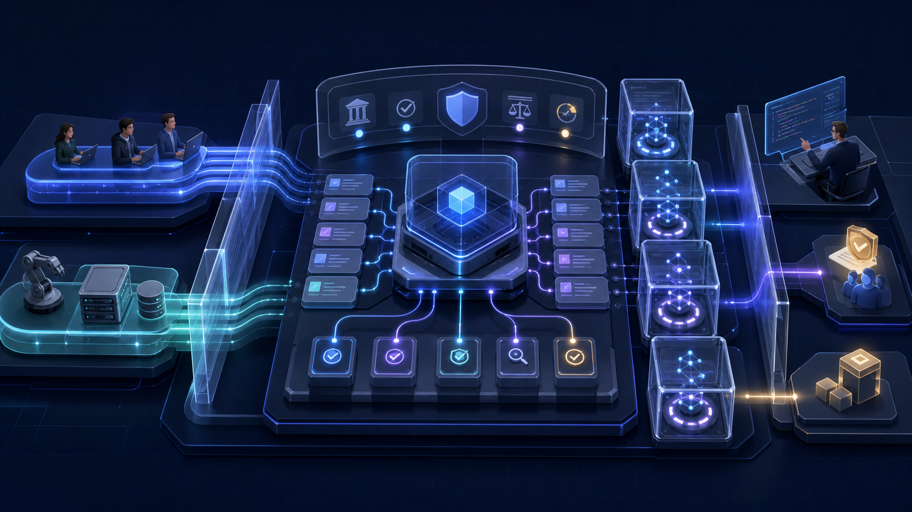
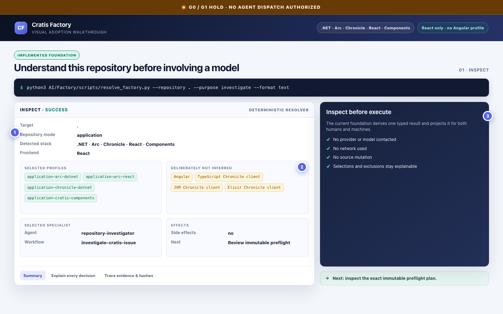
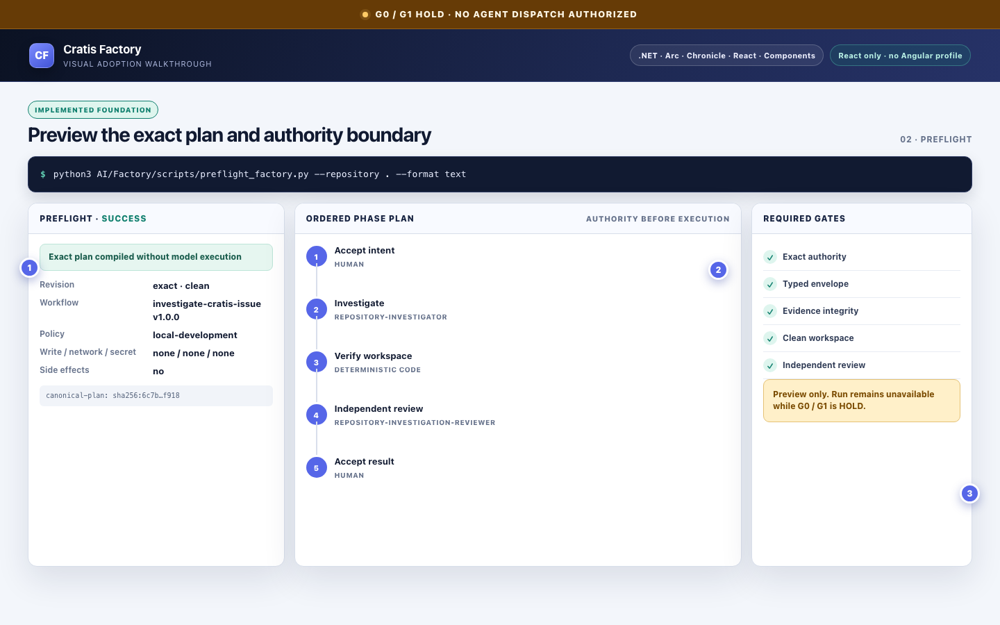
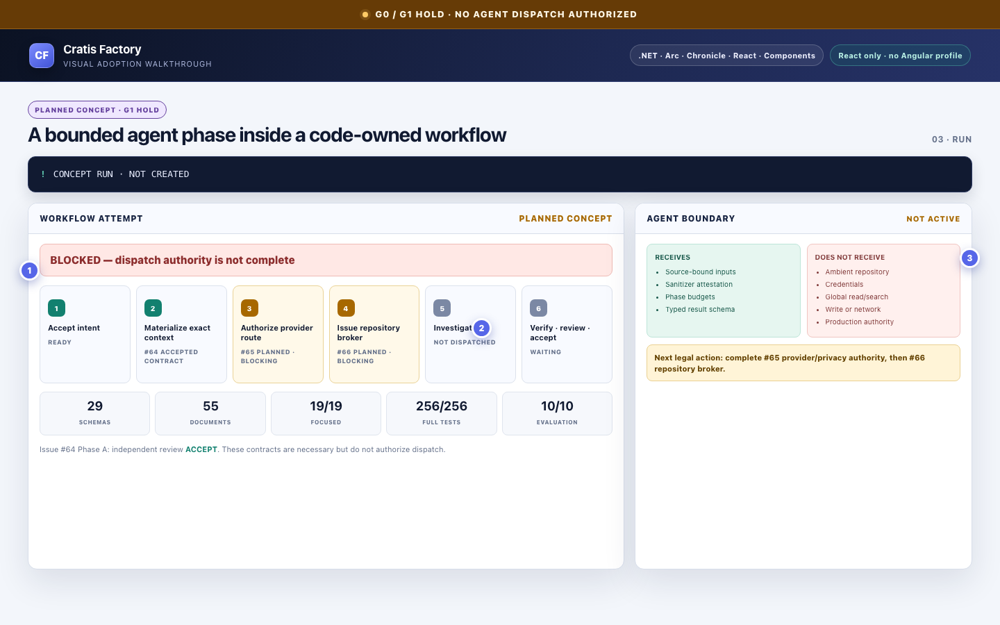
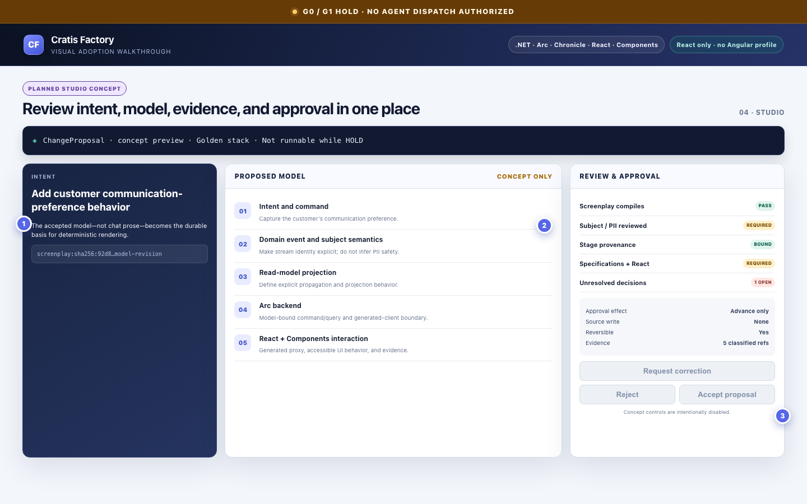
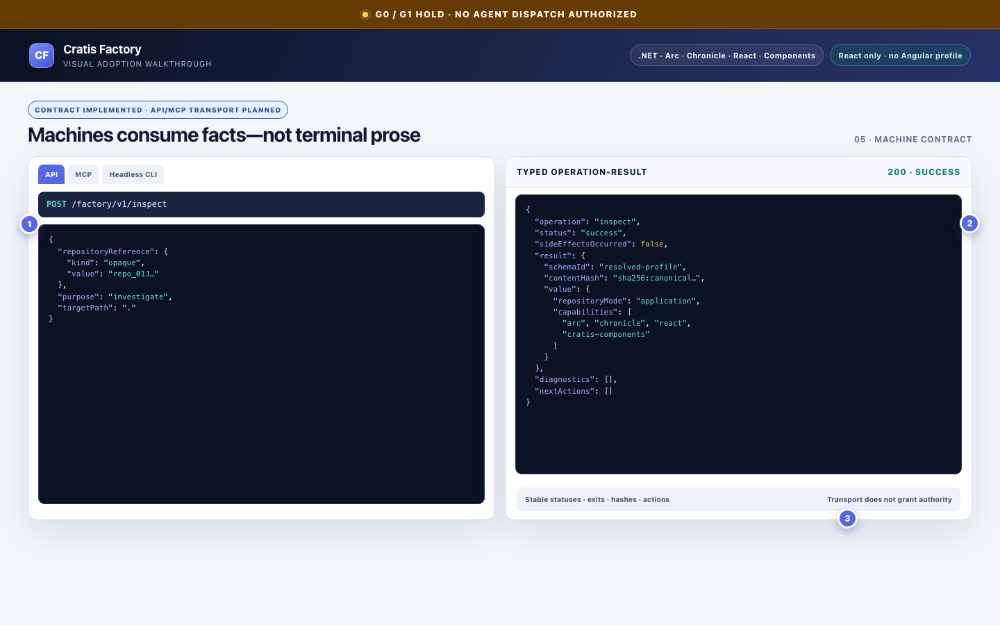
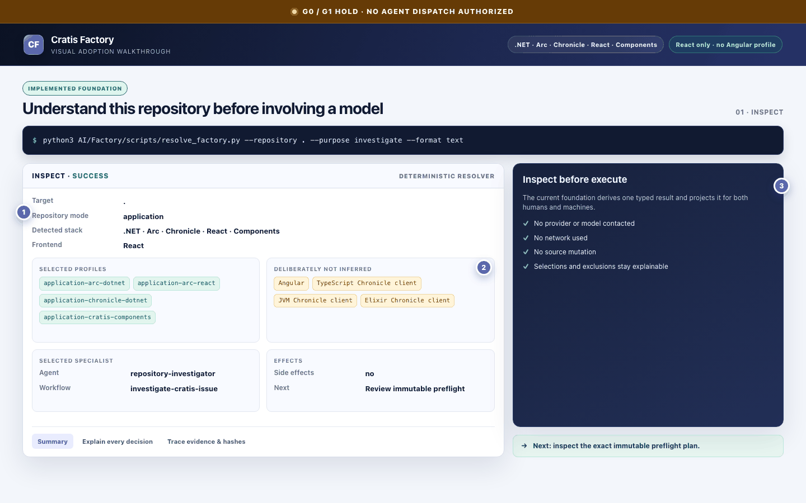

Inspect
Implemented Learn what the repository actually is before a model is involved.
Product, architecture, security, and delivery plan
A governed, Cratis-native software factory that turns intent into typed, reviewable, verified work while keeping authority, policy, and side effects in deterministic code.
Canonical planning document · Updated 15 August 2026 · Local visual bundle · no external network assets
North star
Cratis Factory is not a customized coding chatbot. It is a governed software factory that understands the actual Cratis ecosystem, converts intent into typed work, delegates bounded reasoning to agents, verifies results with deterministic tools, and gives humans and machines the same trustworthy account of what happened.
Probabilistic agents propose and reason. Deterministic Cratis-owned code decides what is allowed, invokes tools, verifies results, records evidence, and performs side effects.
No Pi, worker, provider, or repository-broker execution—and no public release—is authorized until issue #64 Phase B, issues #65 and #66, historical and multi-harness baselines, and the required usability and accessibility gates have all passed.
A developer should eventually be able to install cratis-factory, point it at a repository, and have it discover the repository type, detect products and versions, select specialist profiles and workflows, show an exact preflight plan, execute inside a protected environment, collect evidence, request meaningful human approvals, correct failures, and publish only through trusted code.
Terminal, Studio, review screens, approval flows, explanations, and recovery guidance.
CLI JSON/JSONL, versioned API, MCP, Planner events, typed results, and stable diagnostics.
Every interface consumes the same contracts, policy decisions, evidence, and operation results.
Generic coding agents do not reliably know Arc model-bound commands and read models, Chronicle event and projection semantics, client-specific APIs, generated-proxy boundaries, Components conventions, Screenplay and Stage, analyzer availability, version trains, or the distinction between applications and framework repositories. That knowledge must be versioned and testable rather than left to model memory.
Prompt instructions are also not an authorization system. The runtime needs code-enforced answers for what files may be read, which provider may receive them, which policy applies, whether the bytes were scanned and sanitized, which side effects are legal, and what evidence proves an operation occurred.
Reality check
This document distinguishes accepted foundations from active work and future intent. “Planned” is not presented as implemented.
Implemented, independently reviewed, and accepted with recorded evidence.
Implementation is underway or its prerequisites are being established.
Architecturally intended, but not yet available as a product capability.
Must not proceed until explicit promotion criteria are satisfied.
Accepted Provenance-bound phase-input contract foundations are complete and independently accepted.
Planned The compiler will emit exact per-phase input contracts, workflows will use minimal agent context instead of the full resolved profile, harness requests will carry provenance-bound inputs, and v1 requests will be rejected for dispatch. This is not implemented yet.
Operating doctrine
Code owns discovery, policy, compilation, approvals, gates, evidence, and side effects. Models reason within those decisions.
Users can see what was detected, selected, rejected, blocked, and recommended before a provider is contacted or source is changed.
Human text and machine JSON are projections of one typed operation result, never separate implementations.
summary is decision-oriented, explain exposes selection reasoning, and trace exposes hashes and audit evidence.
Results report what actually changed, including partial publication, cleanup failure, link hazards, and race detection.
Missing, expired, unknown, mismatched, or revoked authority blocks execution; it never becomes an implicit allow.
A hash proves bytes have not changed. It does not prove who created them, whether the issuer was trusted, whether the object belongs to this run, whether its provider was authorized, or whether required scanning occurred. The design therefore treats integrity, provenance, authority, policy, and evidence as distinct concepts.
Cratis knowledge belongs in harness-neutral contracts, profiles, agents, skills, and workflows. Pi, Codex, Copilot, or a future runner may adapt to those semantics; no harness becomes the source of truth.
System shape
Human terminal CI / automation Other AI agents Studio
\ | | /
\ | | /
cratis-factory interfaces
CLI / JSON / JSONL / API / MCP
|
Deterministic Factory core
discovery - policy - compiler - preflight - evaluator
|
Planner / execution control plane
runs - phases - attempts - approvals - evidence - replay
|
Protected capability broker
artifacts - repository reads - tools - provider authority
|
+----------------------+------------------------+
| | |
Pi adapter Other harnesses Deterministic tools
bounded reasoning bounded reasoning cratis / Screenplay /
Stage / builds / tests
Owns the local and headless experience: contracts, discovery, profiles, policy evaluation, workflow compilation, preflight, typed results, and evaluations.
Owns durable runs, phases, attempts, leases, idempotency, approvals, corrections, cancellations, replay prevention, and evidence references.
Owns visual intent, proposal, evidence, review, correction, and approval experiences while consuming shared contracts.
Owns repository and artifact access, bounded reads, scanning, sanitization, quotas, and grant enforcement.
Run bounded reasoning sessions. Pi is the first candidate, but adapters cannot make policy or publish changes.
The Cratis CLI, Screenplay, Stage, builds, tests, analyzers, Git, browsers, and publishers perform verifiable operations.
The Factory belongs in Cratis/AI. AI owns contracts, profiles, workflows, agents, skills, resolver/compiler logic, preflight, evaluations, harness-neutral runtime contracts, adapters, policy contracts, and eventual distribution.
The existing cratis CLI remains the deterministic Cratis capability plane. It should not acquire Pi, provider, session, agent, or Planner responsibilities. A future cratis factory command could be a forwarding shim, not an embedded runtime.
See the adoption path
These visuals show how the accepted deterministic foundation should be used today, where execution is deliberately blocked, and how the planned Studio and transport experiences fit later.
The screenshots are deterministic design mockups for explaining the intended experience. Only the features labelled Implemented foundation or Contract implemented exist in the current foundation. Agent dispatch and Studio remain planned and gated while G0 / G1 is HOLD.

Implemented Learn what the repository actually is before a model is involved.
Implemented Review the exact workflow, authority, gates, and expected effects.
Gated Dispatch stays blocked until #65 and #66 establish missing authority.
Planned Review intent, models, evidence, corrections, and approvals together.
Mixed Typed result contracts exist; API and MCP transports are planned.
Reading the frames: numbered dots in each image map to the numbered annotations beneath it. With JavaScript enabled, use Previous, Next, Play, Pause, Left/Right Arrow, or Space. Nothing plays automatically, and reduced-motion preferences disable timed playback. Without JavaScript, all five annotated figures remain visible.

Start here. The resolver turns repository evidence into one typed, explainable selection before any probabilistic work is considered.

Review an immutable plan that binds the repository, workflow, people, deterministic tools, policy, gates, and expected effects.

This is the intended bounded execution shape, not an available run screen. Accepted provenance contracts are necessary but do not authorize dispatch.

The future visual review surface brings intent, an immutable model revision, deterministic evidence, unresolved decisions, and approval scope into one place.

Headless clients consume the same typed facts as humans. They never scrape terminal prose or gain authority merely by choosing a transport.
The GIF is a secondary convenience: five frames at two seconds each, with no infinite loop. The annotated static figures and transcript above are the authoritative accessible walkthrough.

Download adoption-tour.gifHow it should be used
.cratis/factory.json to restrict profiles, pin workflow versions, or deny capabilities. The manifest can narrow authority, never invent or expand it.Exact clean revision, target path, repository mode, and resolved profile composition.
Baseline/effective policy, capability grants, provider requirements, and approvals.
Exact workflow ID, version, hash, phases, selected agents, budgets, gates, and schemas.
Expected reads, writes, network use, artifacts, mutations, and publishing actions.
Machines receive versioned requests, canonical JSON results, ordered JSONL events, stable operation names, diagnostic codes, explicit capability grants, artifact references, idempotency keys, and replay rules. They never parse prose to determine whether to retry, request approval, or stop.
| Status | Exit | Meaning |
|---|---|---|
success | 0 | Operation completed. |
invocation-error | 2 | Caller used the interface incorrectly. |
blocked | 3 | Required state or authority is unavailable. |
invalid | 4 | Input or definition is invalid. |
integrity-error | 5 | Integrity, provenance, or deterministic verification failed. |
approval-required | 6 | A human decision is required. |
denied | 7 | Policy forbids the operation. |
unexpected | 70 | Internal failure reported without leaking private details. |
Cratis intelligence
Resolution composes purpose, repository mode, Cratis products, language ecosystem, Chronicle client, React/UI surfaces, package versions, analyzers, target path, policy, and manifest narrowing. It learns what is present and what must not be inferred.
Explicit Cratis .NET + React stack combining the core patterns and dependency barriers needed for a complete vertical slice.
1.0.0 may not be published package versions.obj, bin, and dist manifests are not product truth.Subject is not automatically safe identity metadata.Factory knowledge covers model-bound [Command] classes and Handle(), optional Provide() flows, model-bound [ReadModel] query methods, query return shapes, Concepts, validation, AOT query metadata, proxy generation, analyzers, authorization roles, React query/command integration, MVVM, Vite metadata, and generated-file boundaries.
For consuming applications, proxy generation is a workflow dependency: Debug builds may generate output at a configured path; generated files carry a marker and must not be edited; frontend work may depend on backend generation; Release should avoid a second unwanted generation pass; and generated APIs use the React packages.
Knowledge covers events, event types, event sources and Subjects, aggregates, projections, reactors, reducers, event migrations, tenancy, event-log access, once-only behavior, read models, client-specific APIs, and privacy-sensitive identity handling.
Profiles exist for .NET, TypeScript, JVM, and Elixir. Non-.NET profiles are primarily discovery profiles today; specialist agents, native specifications, compatibility matrices, real fixtures, and packaging gates remain planned.
A Chronicle Subject is a domain or event-stream identifier. It is not automatically a safe telemetry identity, approval actor, read-model subject rule, or privacy-safe user reference. Durable Factory approvals use opaque run-scoped actor references.
Components is recognized as a React framework library through @cratis/components, React peers, PrimeReact, Arc React, Storybook, component source layout, Vitest/BDD tests, public subpath exports, and styling tokens. Framework-library workflows are used in the Components repository.
Planned specialists include component development, Arc integration review, TypeScript BDD, Storybook visual/accessibility review, packaging/public API review, ESLint plugin development, documentation contracts, and performance for Pixi, DataTables, and other large surfaces.
Screenplay provides a model-first structure for intent; Stage renders accepted models deterministically. Agents help discover and propose intent, but the accepted proposal compiles into deterministic artifacts and gates.
Integration model
Pi is useful for a composable coding-agent loop and programmatic sessions, but it does not own Factory authority. Its ordinary filesystem, search, shell, network, extension, discovery, and binary-acquisition surfaces are too broad for the governed runtime.
A future factory-pi adapter will create an in-memory session, disable default broad tools, use a strict resource loader, deliver only authorized classified artifacts, expose only broker-backed tools, emit typed events, and submit a typed phase result.
factory.bundle.metadata factory.bundle.search factory.bundle.readChunk factory.result.submit
There is no general file read, recursive search, shell, or repository-global search. The preferred strategy is to compose upstream Pi first and fork only if measured security or isolation requirements cannot be met through supported seams.
Planner will own runs, workflow instances, phases, attempts, leases, idempotency, corrections, approvals, cancellation, replay prevention, evidence and artifact references, provider authorization, broker grants, deletion obligations, and worker recovery.
Run requested; preflight accepted; phase scheduled; attempt created; provider authorization requested, resolved, or revoked; repository bundle requested, prepared, or denied; artifact sanitized; agent session started; gate completed; approval requested, accepted, or denied; correction requested; phase result accepted or rejected; replay rejected; deletion requested, confirmed, or overdue; run completed, cancelled, or failed.
Planner stores sanitized facts and opaque references—not raw prompts, transcripts, secrets, or source bytes.
Studio will show intent, detected ecosystem, selected and excluded profiles, Screenplay proposals, the phase graph, current attempt, model/provider choice, region and privacy policy, bundle scope, classification, budgets, evidence, gate results, proposed diff, approval scope, side-effect preview, and recovery choices.
Accessibility is a product requirement: keyboard-complete flows, correct focus management, meaningful screen-reader status, no color-only meaning, no hidden essential information, understandable approvals, and concrete next actions. Headless clients remain equally capable.
| Area | Tools and gates | Why |
|---|---|---|
| .NET / Arc | dotnet build, dotnet test, Arc and Chronicle analyzers, proxy generation, package inspection, public API checks | Compile, verify framework conventions, and produce generated clients deterministically. |
| React / Components | Immutable Yarn install, TypeScript, ESLint, Vitest, Storybook, interaction/browser tests, accessibility, visual regression, tarball consumer smoke | Compilation alone does not prove package shape, interactions, visuals, or accessibility. |
| Chronicle clients | Client-native builds/tests, package-manager verification, version resolution, integration fixtures | Each language needs native evidence and real API compatibility. |
| Cratis CLI | Existing deterministic commands, capability metadata, declared effects and confirmations | Expose stable domain capabilities without embedding an agent runtime. |
| Git | Attested executable, minimal environment, neutralized configuration and helpers, clean exact revision, no followed links | Treat Git configuration, hooks, credentials, replacements, and paths as authority boundaries. |
| Browser / UI | Behavioral automation, keyboard/focus tests, accessibility, screen evidence, generated-proxy compatibility | Verify visible behavior and user paths rather than only source shape. |
Governance
A provider call or repository read requires trusted authority bound to the exact run, phase, attempt, inputs, policy, and audience. Valid JSON and valid hashes are necessary but insufficient.
A signed routing authorization will bind the run, phase attempt, harness request, tenant reference, purpose, effective classification, data categories, provider, model, endpoint class, region, retention, deletion deadline, training and product-improvement terms, human review, secondary use, abuse monitoring, effective policy, approval, validity window, nonce, issuer, key, and signature.
Before every dispatch, the worker verifies signature and trust root, policy revision, audience, tenant/run/attempt/request equality, time and revocation, exact route and classification, data-use settings, and remaining quotas. Provider failover can select only another already-authorized route.
Operational readiness also requires DPA and subprocessor review, residency and transfer decisions, training and review terms, abuse-log handling, backup retention, deletion evidence, incident notification, lawful basis, erasure/DSAR processes, and tenant-specific restrictions.
read-repository will mean access to an immutable, bounded bundle—not permission for a model to search the workspace. Intended operations are PrepareReadBundle, GetBundleMetadata, SearchBundle, ReadBundleChunk, and CloseBundle.
A signed grant binds the exact revision/tree, enumerated files or immutable manifest, scanner and policy rules, classification ceiling, transformations, quotas, exclusions, validity, revocation, run/phase/request, issuer, and signature.
The broker rejects absolute paths, traversal, escaping symlinks, submodule indirection, special files, mutable references, .git, credentials, oversized content, unsupported binaries, archive bombs, and hash mismatches. Scanning happens before any model-visible byte. A request for more data triggers a new policy decision; it cannot widen an existing bundle.
Typed foundation
Contracts cover objectives, repository snapshots, profiles and resolved profiles, workflows, policies, capabilities, compiled workflows, harness requests and events, phase envelopes, investigation results, gate reports, approvals, Chronicle read grants, diagnostics, next actions, operation results, and evaluation catalogs/results.
JSON artifacts use canonical JSON for hashing; other media types hash exact stored bytes. Even pass-through sanitization requires a trusted attestation.
The agent receives the resolved-profile hash; repository mode and target; selected profile IDs, versions, and hashes; selected skill IDs and hashes; capability IDs; workflow ID, version, and hash; phase purpose; agent-definition hash; and generator/allowlist hashes.
It does not receive raw resolver evidence, match/rejection reasons, warnings, manifest content, remotes, repository identity, arbitrary prose, or package-version details unless a separately authorized artifact is required for the task.
Evidence over impressions
The Factory is evaluated as a system. A response looking plausible is not evidence that discovery, authority, repository access, Cratis semantics, or side effects were correct.
Product/client detection, profile composition, versions, repository mode, negative selection, and no invented Angular or Chronicle implications.
Traversal, links, submodules, special files, secrets, PII, prompt injection, substitution, replay, authorization tampering, expiry, revocation, and quota bypass.
Correct Cratis APIs and patterns, event modeling, Arc/Chronicle semantics, React/Components use, tests, review findings, and correction effectiveness.
Run the same tasks through Pi, single-agent baselines, supported harnesses/providers, and historical stable revisions.
Time to understand and verify, approval comprehension, correction, recovery, trust, abandonment, keyboard access, and screen-reader accessibility.
The foundation includes dedicated GitHub Actions, pinned Python dependency closure, schema validation, unit tests, evaluation with authoritative verification, Python compilation, diff checking, fixture-output rejection, AI-corpus drift detection, CODEOWNERS, documentation validation, and clean-checkout verification.
Seven inherited AI-corpus failures remain explicitly baselined debt in issue #63. Security-sensitive slices use separate implementation and adversarial review, reproduce findings, fix high-severity issues, re-review, run full and clean-copy gates, and update the owning issue with exact evidence.
Delivery
Planned The target is a signed standalone cratis-factory executable with OS/architecture assets, immutable releases, SHA-256 manifests, SBOM, build provenance, atomic installation/update, rollback, offline documentation, and readiness diagnostics.
The current implementation remains a development foundation in the AI repository: Python scripts, pinned dependencies, JSON Schemas, fixtures, tests, documentation, and GitHub Actions. It is not yet a finished installable product.
An install.md pilot can serve as a public onboarding guide, ordered MCP-readable instructions, and a way to measure onboarding friction. It cannot be the source of truth, binary distribution mechanism, policy authority, success verifier, private-repository index, prompt/evidence sink, or mandatory hosted dependency. The pilot uses only public content and an immutable public fixture; AI remains canonical and generates hosted and static forms.
Sequenced delivery
Contracts, resolver, compiler, preflight, evaluations, trusted Git, policy-aware results, privacy protections, and Phase-A provenance contracts. No model execution.
Phase A has passed all recorded gates. Phase B will connect exact provenance-bound inputs to compiler, workflow, and dispatch behavior.
Build signed routing authorization, policy vectors, trust-root operation, deletion evidence, and legal/provider readiness before any real provider call.
Begin with fixture-only exact-file bundles, no globbing/model/network, bounded chunks, and deterministic scanner fixtures; add bundle search later.
Read-only investigation in a disposable workspace, network off, default broad Pi tools disabled, no production Chronicle data, no publishing, full audit, and a kill switch.
A .NET + Arc + Chronicle + React + Components path from intent and Screenplay through deterministic Stage output, implementation, tests, proxies, UI, reviews, and PR proposal.
Durable runs and resume, managed workers, evidence and costs, approvals, proposal/diff review, and multi-agent corrections.
Trusted commit/PR creation, more workflows, JVM/Elixir/TypeScript specialists, framework maintenance, packaging/releases, and much later narrowly governed deployment authority.
Scope boundary
| Capability | Today | Target |
|---|---|---|
| Repository understanding | Deterministic discovery, 14 profiles, summary/explain/trace. | Broader fixtures, version matrices, and client-specialist packs. |
| Workflow planning | Compilation and no-model preflight. | Durable execution, corrections, approvals, and replay-safe resume. |
| Agent execution | Not enabled. | Strict broker-backed Pi and other adapters. |
| Provenance | Issue #64 Phase A accepted; v2 primitives and verification established. | Phase B dispatch integration and rejection of legacy authority. |
| Repository access | Explicit deterministic read capability and hardened Git inspection. | Signed immutable read bundles with scanning, sanitization, and quotas. |
| Provider access | No model/provider calls. | Signed provider/privacy authorizations verified before each dispatch. |
| Publishing | No agent commits or PRs. | Explicitly approved trusted publisher with truthful side-effect receipts. |
| Interfaces | Development CLI/scripts and typed operation contracts. | Standalone CLI, API, MCP, Planner, and Studio using shared semantics. |
| Distribution | Repository-based Python foundation. | Signed standalone executable, SBOM, provenance, update, and rollback. |
| Evidence | 10/10 executable evaluator cases; focused/full test gates and CI. | Security, multi-harness, historical, usability, and accessibility baselines. |
Program map
Strategic outcome
The moat is not the number of agents. It is the combination of Cratis ecosystem intelligence, Screenplay semantics, deterministic Stage rendering, Arc and Chronicle analyzers, real build/test/runtime evidence, versioned workflows and contracts, governed artifact/provider authority, human-understandable control, harness independence, and evaluations drawn from real Cratis repositories.
Knowledge learned once can improve CLI and Studio users, Pi and other harnesses, CI, Java/Kotlin and Elixir clients, React applications, and framework maintainers without being trapped inside one prompt or model.
A developer describes intent at the level they naturally understand. Cratis Factory discovers the real system, selects the right specialists, models the change, produces deterministic artifacts, implements and verifies it in a governed environment, explains every decision, and asks the human only for decisions that genuinely require human authority.
{kind=link}
{kind=link}
{kind=link}
{kind=link}
{kind=link}
{kind=link}